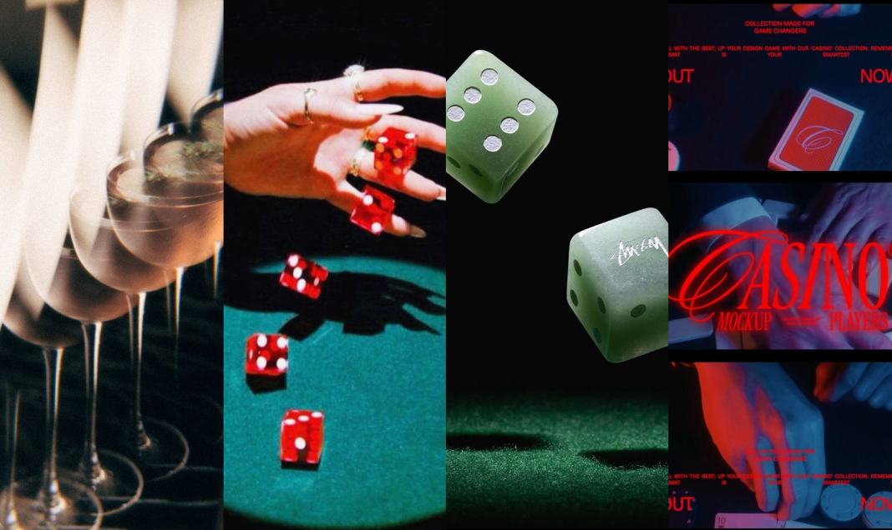
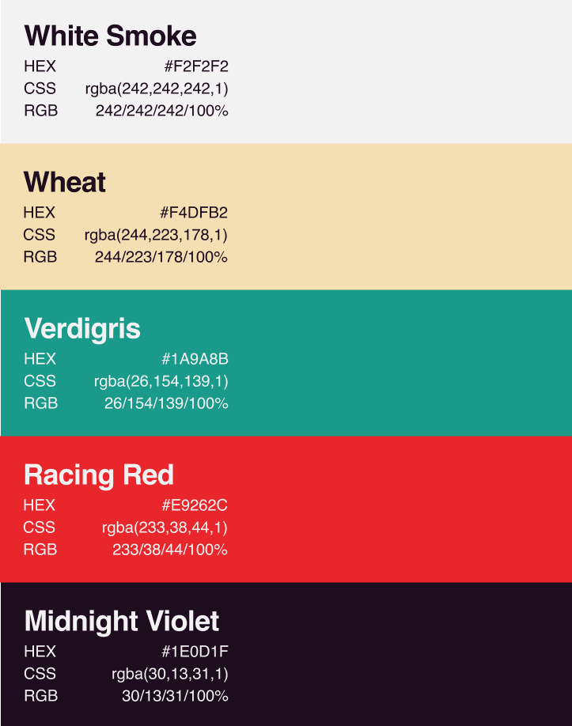
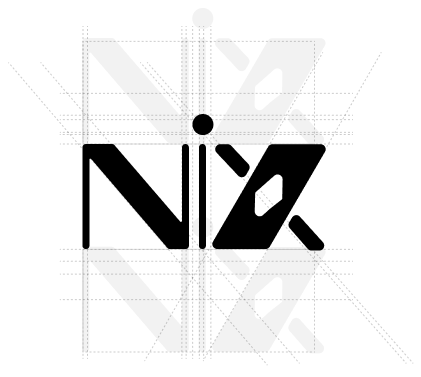
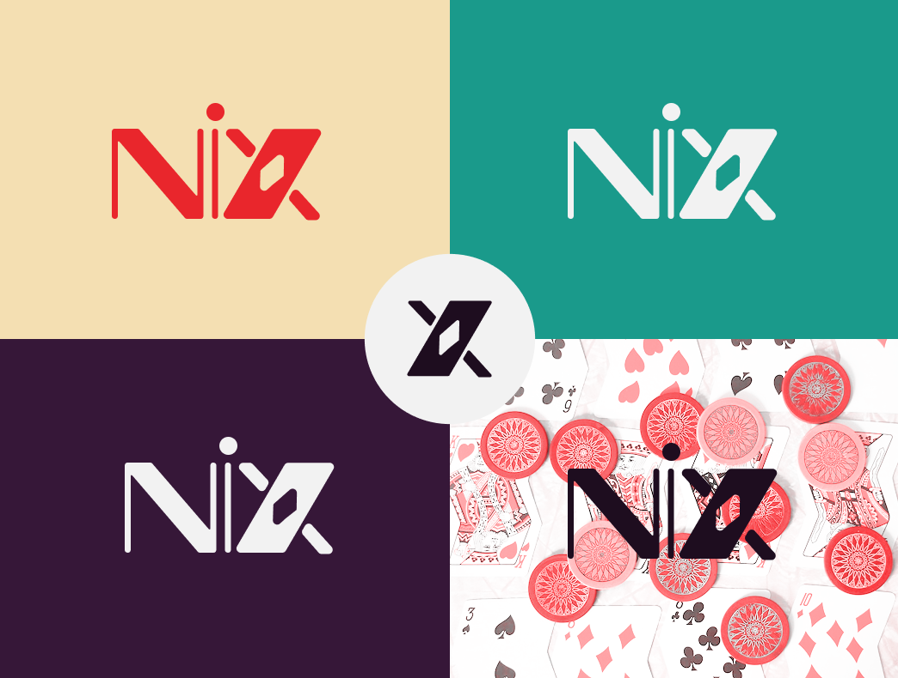

Context & Benchmark
For this online casino without real-money stakes, I started with a benchmark of industry giants. The goal was to simplify the interface for a wider audience.

Visual Identity & Moodboard
I aimed to convey a premium, lucky, elegant, and intimate atmosphere for the online casino. The idea was to give the platform a refined and sophisticated feel while still keeping it accessible and welcoming to players. The moodboard helped guide this direction, especially in selecting colors that balance elegance with approachability.


Logo variations
The logo was designed to reflect the premium and elegant identity of the online casino. It uses a typeface with strong contrasts between thick and thin strokes to emphasize this refined feel. A playing card element was integrated into the design to reference the casino universe. The logo construction ensures clarity and balance, and it is presented in several color variations from the palette for consistency. A simplified symbol version (monogram) was also created for smaller formats such as social media avatars or icons.

